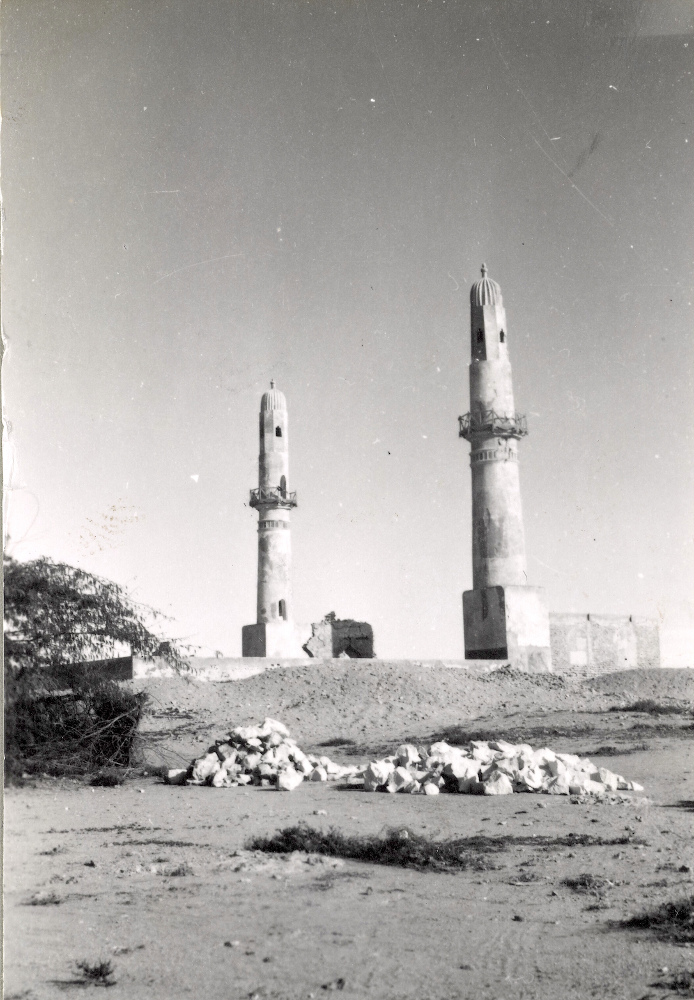

Welcome to Bahrain Fihrist
This is a comprehensive bibliographic resource dedicated to works related to the history of Bahrain. Our aim is to provide researchers, students, and enthusiasts with a well-organized collection of both primary sources and scholarly studies on Bahraini history.
The Bahrain Fihrist project catalogues materials from various periods, perspectives, and languages, serving as a crucial reference for anyone interested in the rich historical tapestry of this Gulf nation.
Explore our carefully curated collection through the "Primary Sources" and "Studies" sections, or learn more about our project and team in the "About" section.

Masjid al-Khamīs, Bahrain, 1956